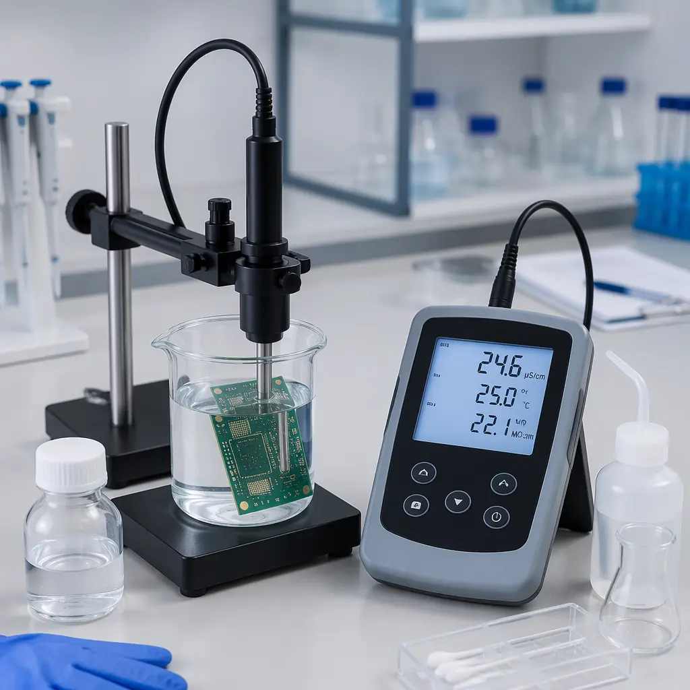

A PCB that passes electrical test can still fail in the field — and one of the most insidious failure modes leaves no visible trace on visual inspection. Ionic contamination — invisible residues from flux, solder paste, plating chemicals, and even fingerprint salts — sits on the board surface. When humidity condenses, these ions dissolve into a conductive electrolyte. Current flows where it shouldn't. Metal migrates between traces. And months after shipment, a dendrite bridges a 0.2mm gap and shorts the board.
At Huaxing PCBA, ionic cleanliness is a gating parameter for every board leaving our facility. We operate ROSE testers on 4 production lines and maintain an in-house SIR chamber capable of 85°C/85% RH, 1,000-hour qualification runs. This guide explains what ionic contamination is, how it's measured, and when you need to specify cleanliness testing on your PCB assembly order. For the broader quality framework, see our PCB testing methods guide.

Where Ionic Contamination Comes From
Contamination isn't just "dirty boards." Ionic residues enter the process at multiple stages — and some are intentionally introduced:
Flux Residues (No-Clean & Water-Soluble)
The biggest contributor. No-clean flux is designed to leave benign residues, but incomplete thermal profiling can leave partially activated flux — acidic residues that become ionic when humid. Water-soluble flux must be fully washed; incomplete cleaning leaves highly corrosive chloride and bromide activators. Even "no-clean" pastes can fail if reflow profiles don't fully polymerize the residue. For assembly process details, see our PCB assembly process guide.
Plating & Etching Chemicals
Electroless nickel immersion gold (ENIG), HASL flux, and copper etchant residues can persist if the final rinse is inadequate. Chloride ions from HCl-based etchants are especially problematic — even parts-per-million levels accelerate corrosion under bias. Our ENIG vs HASL surface finish comparison covers how different finishes impact cleanliness requirements.
Handling & Environmental Contamination
Fingerprint salts (sodium chloride), airborne sulfates in industrial environments, and even outgassing from packaging materials deposit ionic contaminants on bare boards. This is why glove protocols and vacuum-sealed moisture-barrier packaging matter — one ungloved hand can deposit enough chloride to fail a ROSE test. Read our MSL moisture sensitivity guide for proper handling procedures.
Critical Fact: Ionic contamination failures are time-delayed. A board can pass 100% functional test at the factory and fail 6-18 months later in the field when humidity, temperature cycling, and bias voltage trigger electrochemical migration. This is why cleanliness testing matters even when initial yield is 100%.
Three Testing Methods: ROSE, SIR, and Ion Chromatography
| Method | What It Measures | Test Duration | Cost/Board | Best For |
|---|---|---|---|---|
| ROSE (Resistivity of Solvent Extract) | Total ionic contamination (μg NaCl equiv/cm²) | 5-15 min | $5-$15 | In-line QC, batch acceptance |
| SIR (Surface Insulation Resistance) | Insulation resistance under temp/humidity/bias | 168-1,000 hrs | $200-$800 | Process qualification, material validation |
| Ion Chromatography (IC) | Individual ion species and concentrations | 30-60 min | $100-$300 | Root cause analysis, forensic failure investigation |
ROSE Testing: The Production Workhorse
The ROSE test (IPC-TM-650 2.3.25) is the most common cleanliness test in PCB production — fast, inexpensive, and quantitative. Here's how it works and what the numbers mean.
The board (or a representative coupon) is immersed in a 75% isopropanol / 25% deionized water solution that dissolves ionic residues. A conductivity probe measures the solution's resistivity before and after extraction. The change in conductivity is converted to micrograms of NaCl equivalent per square centimeter (μg NaCl equiv/cm²).
J-STD-001 Limit: ≤1.56 μg NaCl equiv/cm²
The default IPC cleanliness threshold for most assemblies. Boards measuring below this pass; above this require investigation. However, 1.56 is a floor, not a target — many high-reliability applications impose tighter limits.
High-Reliability Applications: ≤0.75 μg NaCl equiv/cm²
Automotive (under-hood), aerospace, medical implantables, and any conformally coated assembly typically require half the standard limit. Conformal coating traps residues underneath — if the board is contaminated before coating, the coating accelerates failure by preventing evaporation. See our conformal coating guide for application best practices.
Limitations of ROSE
ROSE measures total ionic content — it cannot distinguish between benign ions (e.g., sodium from glass fibers) and corrosive ions (chloride from flux). A board can pass ROSE while having dangerous chloride concentration if other benign ions are low. For process qualification, ROSE should be supplemented with SIR testing. Our IPC standards comparison covers which standard to invoke for your application.

SIR Testing: The Process Qualification Gold Standard
Surface Insulation Resistance testing (IPC-TM-650 2.6.3.3 / J-STD-004) is a long-duration environmental stress test that measures whether a manufacturing process produces boards that remain electrically reliable under worst-case conditions.
A standardized SIR coupon (interdigitated comb pattern on FR-4) is processed through the exact same manufacturing steps as production boards — same solder paste, same reflow profile, same cleaning (or no-clean) process. The coupon is then placed in a chamber at 85°C / 85% relative humidity with 45-100V DC bias applied across the comb pattern. Insulation resistance is continuously monitored for 168 hours (standard) or 1,000 hours (extended qualification).
Pass criteria per IPC-J-STD-004C: Resistance must remain above 100 MΩ (typically 10⁸ Ω) throughout the entire test. A single coupon falling below this threshold — even briefly — fails the qualification. Dendrite growth visible under microscope at test conclusion is also a fail, regardless of resistance readings.
Why SIR Matters for Buyers: If your PCB supplier changes flux chemistry, solder paste brand, or cleaning process without re-running SIR qualification, they are shipping boards with unvalidated cleanliness. Always ask: "When was your last SIR qualification for this flux/paste combination?" A supplier who cannot answer this question hasn't done the homework. Read our supplier audit guide for the full qualification checklist.
Ion Chromatography: When You Need to Know What, Not Just How Much
When a ROSE test fails or field returns show corrosion patterns, ion chromatography answers the question that ROSE cannot: which specific ions are present, and in what concentrations?
IC separates and quantifies individual ion species — typically reporting results in μg per square inch for each detected ion:
| Ion Species | Typical Source | Risk Level | Common Limit (μg/in²) |
|---|---|---|---|
| Chloride (Cl⁻) | Flux activators, HCl etchants, handling | 🔴 High | ≤0.5-1.0 |
| Bromide (Br⁻) | Flame retardants (FR-4), flux | 🟡 Medium | ≤1.0-5.0 |
| Sulfate (SO₄²⁻) | Plating baths, airborne contamination | 🟡 Medium | ≤0.5-1.0 |
| Sodium (Na⁺) | Glass fibers, handling, water quality | 🟢 Low | ≤1.0-3.0 |
| Weak Organic Acids (WOAs) | No-clean flux residues | 🟡 Medium | ≤10-20 |
IC is not a routine production test — it's a troubleshooting and validation tool. Run IC when qualifying a new flux chemistry, investigating field failures with corrosion signatures, or when a ROSE test repeatedly fails and you need to identify the contamination source. For broader quality dispute resolution, our quality dispute resolution guide covers how to handle non-conforming lots.
When to Specify Cleanliness Testing on Your Order
High-Density Interconnect (HDI) — Always
When trace/space drops below 0.1mm (4 mil), the gap that dendrites must bridge shrinks proportionally. A contamination level that's safe at 0.2mm spacing can cause shorts at 0.075mm. For HDI boards, specify ≤0.75 μg NaCl equiv/cm² ROSE and require a per-lot ROSE certificate. See our HDI technology guide for design rules.
Conformally Coated Assemblies — Always
Coating traps contaminants. If the board is dirty before coating, the coating creates a sealed micro-environment that accelerates corrosion. Always specify pre-coating ROSE test. For coating material selection, see our conformal coating guide.
Automotive, Medical, Aerospace — Always
Any application where field failure has safety or regulatory consequences requires cleanliness testing. Automotive typically requires ≤0.75 μg/cm² ROSE + SIR qualification per IPC-6012 Class 3. Medical (IEC 60601) may additionally require biocompatibility-compatible cleaning processes. See our certifications and compliance guide.
Consumer Electronics — As Needed
For non-safety-critical consumer products, standard J-STD-001 cleanliness (≤1.56 μg/cm²) is usually adequate. If your product has a condensing humidity environment (outdoor, bathroom, kitchen), consider specifying ROSE testing even for consumer-grade boards. Our PCB cost factors guide helps weigh testing costs against field return risk.
At Huaxing PCBA, every production lot undergoes ROSE testing with batch certification. For customers requiring SIR qualification, our in-house chamber supports J-STD-004C protocols up to 1,000 hours. We maintain ion chromatography capability for root-cause investigation. Combined with our IATF 16949 and ISO 9001 quality system, this means cleanliness is verified — not assumed — before your boards ship.